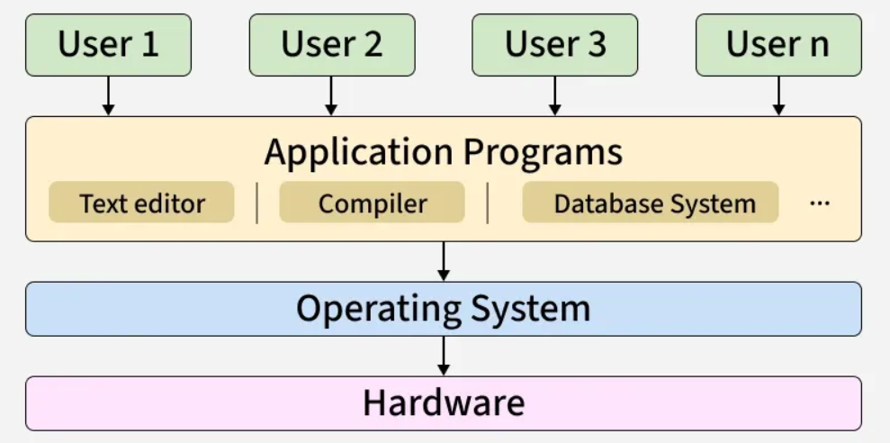

Operating Systems
- Intro -
An operating system acts as an abstraction layer between users and hardware.
It manages and handles the hardware and software resources of a computing device.
Some topics that fall under operating systems are: process scheduling, process synchronization, deadlocks, multithreading, and memory management.

- Goals -
User convenience: provide user-friendly interfaces
Program Execution: provide the environment and services for user programs to run
Resource management: allocate resources fairly and efficiently (eg. CPU, memory, disk storage, I/O)
Security: protect the system and user data from unauthorized access
Reliability: handle errors/exceptions gracefully, allowing for smooth operation
- Examples -
Windows
macOS
Linux
Unix